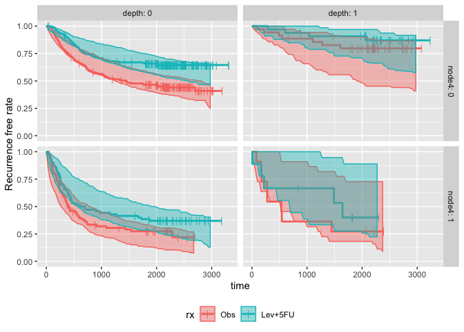

The goal of survParamSim is to perform survival simulation with parametric survival model generated from ‘survreg’ function in ‘survival’ package. In each simulation, coefficients are resampled from variance-covariance matrix of parameter estimates, in order to capture uncertainty in model parameters.
Example
This GitHub pages contains function references and vignette. The example below is a sneak peek of example outputs.
First, run survreg to fit parametric survival model:
library(dplyr)
#>
#> Attaching package: 'dplyr'
#> The following objects are masked from 'package:stats':
#>
#> filter, lag
#> The following objects are masked from 'package:base':
#>
#> intersect, setdiff, setequal, union
library(ggplot2)
library(survival)
library(survParamSim)
set.seed(12345)
# ref for dataset https://vincentarelbundock.github.io/Rdatasets/doc/survival/colon.html
colon2 <-
as_tibble(colon) %>%
# recurrence only and not including Lev alone arm
filter(rx != "Lev",
etype == 1) %>%
# Same definition as Lin et al, 1994
mutate(rx = factor(rx, levels = c("Obs", "Lev+5FU")),
depth = as.numeric(extent <= 2))Next, run parametric bootstrap simulation:
sim <-
surv_param_sim(object = fit.colon, newdata = colon2,
censor.dur = c(1800, 3000),
# Simulating only 100 times to make the example go fast
n.rep = 100)
sim
#> ---- Simulated survival data with the following model ----
#> survreg(formula = Surv(time, status) ~ rx + node4 + depth, data = colon2,
#> dist = "lognormal")
#>
#> * Use `extract_sim()` function to extract individual simulated survivals
#> * Use `calc_km_pi()` function to get survival curves and median survival time
#> * Use `calc_hr_pi()` function to get hazard ratio
#>
#> * Settings:
#> #simulations: 100
#> #subjects: 619 (without NA in model variables)Calculate survival curves with prediction intervals:
km.pi <- calc_km_pi(sim, trt = "rx", group = c("node4", "depth"))
km.pi
#> ---- Simulated and observed (if calculated) survival curves ----
#> * Use `extract_median_surv()` to extract median survival times
#> * Use `extract_km_pi()` to extract prediction intervals of K-M curves
#> * Use `plot_km_pi()` to draw survival curves
#>
#> * Settings:
#> trt: rx
#> group: node4
#> pi.range: 0.95
#> calc.obs: TRUE
plot_km_pi(km.pi) +
theme(legend.position = "bottom") +
labs(y = "Recurrence free rate") +
expand_limits(y = 0)
Calculate hazard ratios with prediction intervals:
hr.pi <- calc_hr_pi(sim, trt = "rx", group = c("depth"))
hr.pi
#> ---- Simulated and observed (if calculated) hazard ratio ----
#> * Use `extract_hr_pi()` to extract prediction intervals and observed HR
#> * Use `extract_hr()` to extract individual simulated HRs
#> * Use `plot_hr_pi()` to draw histogram of predicted HR
#>
#> * Settings:
#> trt: rx
#> (Lev+5FU as test trt, Obs as control)
#> group: depth
#> pi.range: 0.95
#> calc.obs: TRUE
plot_hr_pi(hr.pi)